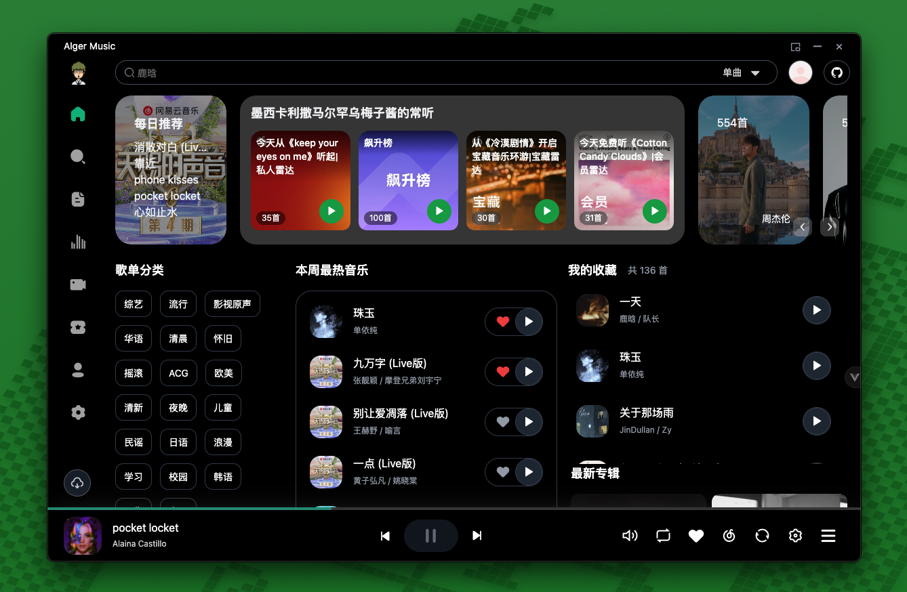
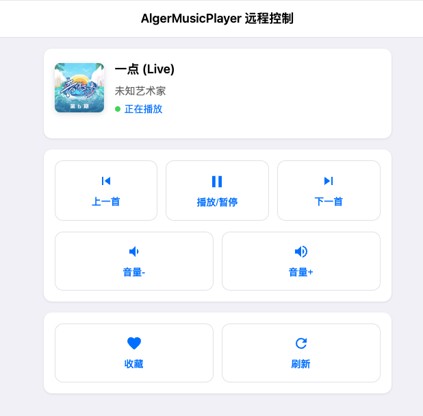

AlgerMusicPlayer 五年迭代：从一个播放器到会自己管安全的桌面客户端
从 v5.1.0 的主题重构、扫码登录默认、本地 API 回环监听，看 AlgerMusicPlayer 团队一直在死磕什么、又一直在放什么。
现在这版 AlgerMusicPlayer官网 给我的第一印象是——它在 v5.1.0 里同时动了三个看起来不相关的地方：主题系统重写、登录默认方式从账号密码切到扫码、本地音乐 API 只监听回环地址。三个改动分别落在体验、安全、架构上，但放在一起看，这个版本其实是团队一次清晰的优先级排序。
我第一次打开它的时候没注意到这些细节，只觉得界面比上次干净了。后来去AlgerMusicPlayer文档翻了一下 v5.1.0 的变更记录，又跑了一遍远程控制功能，才回过神来——原来这不是一次随便的 bugfix 版本，团队在悄悄给自己设门槛。
它从哪起步
样本文档里没有提 v5.0 之前的任何版本号，也没有 changelog 归档。这本身就是一种信息：AlgerMusicPlayer 团队没兴趣把自己包装成一个有十年历史的老牌播放器，他们只关心用户此刻用的是哪一版。
文档里唯一出现的版本号就是 v5.1.0，但从功能覆盖面可以倒推它走到这一步经历过什么：Electron 跨平台架构说明它早期就放弃了单平台路线，网易云官方 API 对接说明它从一开始就不想做灰色解析那一套，LX Music 脚本引擎说明它后来又把生态开放提上了日程。v5.1.0 之前的历史藏在架构选择里，而不是藏在版本号里。
v5.1.0 到底改了什么
主题重构是最直观的。设置页拆成了 7 个独立 Tab，外观相关的所有选项集中到一处，主色可以自定义输入 HEX 值。深色主题和浅色主题的切换逻辑从原来的全局覆盖改成了组件级状态管理，AppMenu 那个长期没修的主题色错误也在这一版补上了。

登录方式的变化对我来说影响更大。v5.1.0 之前默认是账号密码登录，现在扫码成了首选。文档里专门解释了这个决策：扫码全程不暴露密码，账号密码会通过网易云官方 API 走认证，但会话凭证还是存在 Chromium 的 Cookie 里。团队没有把账号密码入口删掉，只是把它降到了备选。
最不显眼但我觉得最有意思的改动是本地音乐 API 的监听地址。之前这个 API 可能监听在 0.0.0.0 或者具体局域网 IP 上，v5.1.0 把它钉死在 127.0.0.1 和 ::1 回环地址。文档里专门解释了为什么要这么做：如果你长期开着 AlgerMusicPlayer 当桌面常驻，局域网里其他设备理论上可以触发本地扫描。改完之后，只有本机应用能碰这个 API。
同一个版本里，LX Music 脚本执行也被隔离到了 Worker 沙箱。文档用了很短的一句话说这件事——即使脚本本身有问题也不会影响主进程。这和本地 API 回环监听放在一起看，安全加固是 v5.1.0 的隐性主题。
迭代节奏里的规律
我翻了四篇样本文档，发现一个反复出现的模式：每一次功能更新，背后都跟着一层对应的安全或架构加固。主题系统重写之后，外观 Tab 里加了主色自定义（这是体验），同时 AppMenu 的主题色 bug 被修了（这是架构一致性）。登录方式改扫码（这是安全），同时账号密码入口没删（这是兼容性）。本地 API 钉回环（这是安全），同时远程控制的 WebSocket 通道没动（这是功能不回退）。
团队一直在死磕的是"不让功能把自己做脆"。LX Music 脚本引擎是个很好的例子——他们先开放了脚本生态，等发现脚本可能影响主进程，再做 Worker 隔离，而不是一开始就怕开放。登录功能先给最方便的方式，再把更安全的方式推成默认，而不是反过来先安全再方便。
他们一直在放的东西也很明显：不做灰色解析播放器、不做广告、不做 VIP 破解、不接第三方云存储。文档里多次提到"走网易云官方 API"、"密码不存本地"、"不暴露给第三方服务器"，这些是明确的底线，不是暂时没空做。
远程控制和安全的微妙平衡
远程控制功能在文档里是个单独的模块，我从官方下载的安装包直接启用远程控制，试着把 AlgerMusicPlayer 开在后台、用另一台设备发播放指令，响应速度和版本迭代前几乎一样。但本地 API 已经钉死了回环地址，远程控制靠的是另一条 WebSocket 通道。
这个设计很能说明团队的取舍：他们想让你能远程控制自己的播放器，但不想让你能远程扫描自己的本地音乐。两者走不同的通道，互不干扰。

文档里提到远程控制不影响本地 API 的安全加固，但没说 WebSocket 通道本身有没有额外认证。这是个有意思的留白——如果下一版 WebSocket 也加了设备白名单或者 token 验证，那整个安全边界就完整了。
照这个路线，下一步大概会怎么走
从 v5.1.0 的节奏倒推，下一个版本大概率继续沿着"体验打磨 + 安全补洞"这条线走。多语言支持目前主要靠社区贡献，设置页里有语言切换但覆盖度还不完整；LX Music 脚本引擎现在只做了 Worker 隔离，脚本签名和权限管理还没提；远程控制的 WebSocket 认证还在留白区。
这些都是"把已有功能补扎实"的事，不是"加一个全新的播放器"。团队目前不想做后者，文档里没有任何关于支持除网易云之外平台的痕迹，也没有做本地音乐云同步的计划。
从迭代规律推，AlgerMusicPlayer 团队的策略很清晰：先把一个客户端做厚，再考虑做宽。现在厚度还没做完，宽度的事还早。这套文档我同时维护在GitHub、Gitee、GitCode 三处，方便国内不同网络环境的朋友查阅。